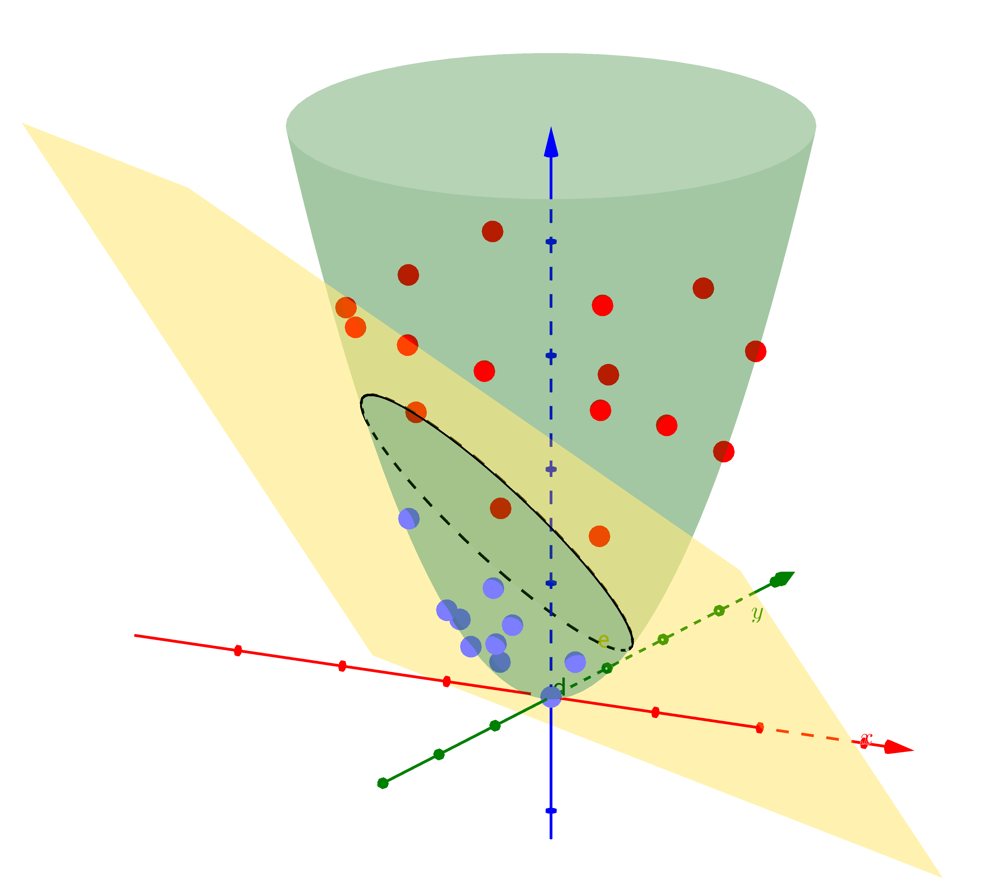

Bạn đọc được khuyến khích đọc Bài 19 và Bài 20 trước khi đọc bài này.
1. Giới thiệu
Có một sự tương ứng thú vị giữa hai nhóm thuật toán phân lớp phổ biến nhất: Neural Network và Support Vector Machine. Chúng đều bắt đầu từ bài toán phân lớp với 2 linearly separable classes, tiếp theo đến 2 almost linear separable classes, đến bài toán có nhiều classes rồi các bài toán với biên không tuyến tính. Sự tương ứng được cho trong bảng dưới đây:
| Neural Networks | Support Vector Machine | Tính chất chung |
|---|---|---|
| PLA | Hard Margin SVM | Hai classes là linearly separable |
| Logistic Regression | Soft Margin SVM | Hai classes là gần linearly separable |
| Softmax Regression | Multi-class SVM | Bài toán phân loại nhiều classes (biên là tuyến tính) |
| Multi-layer Perceptron | Kernel SVM | Bài toán với dữ liệu không linearly separable |
Trong Bài 21 này, tôi sẽ viết về Kernel SVM, tức việc áp dụng SVM lên bài toán mà dữ liệu giữa hai classes là hoàn toàn không linear separable (tôi tạm dịch là không phân biệt tuyến tính). Bài toán phân biệt nhiều classes sẽ được tôi trình bày trong Bài 22: Multiclass SVM.
Ý tưởng cơ bản của Kernel SVM và các phương pháp kernel nói chung là tìm một phép biến đổi sao cho dữ liệu ban đầu là không phân biệt tuyến tính được biến sang không gian mới. Ở không gian mới này, dữ liệu trở nên phân biệt tuyến tính.
Xét ví dụ dưới đây với việc biến dữ liệu không phân biệt tuyến tính trong không gian hai chiều thành phân biệt tuyến tính trong không gian ba chiều bằng cách giới thiệu thêm một chiều mới:
|
a) |
 b) |
 c) |
Hình 1: Ví dụ về Kernel SVM. a) Dữ liệu của hai classes là không phân biệt tuyến tính trong không gian hai chiều. b) Nếu coi thêm chiều thứ ba là một hàm số của hai chiều còn lại \(z = x^2 + y^2\), các điểm dữ liệu sẽ được phân bố trên 1 parabolic và đã trở nên phân biệt tuyến tính . Mặt phẳng màu vàng là mặt phân chia, có thể tìm được bởi Hard/Soft Margin SVM. c) Giao điểm của mặt phẳng tìm được và mặt parabolic là một đường ellipse, khi chiếu toàn bộ dữ liệu cũng như đường ellipse này xuống không gian hai chiều ban đầu, ta đã tìm được đường phân chia hai classses. |
Để xem ví dụ này một cách sinh động hơn, bạn có thể xem clip nhỏ dưới đây:
Nói một cách ngắn gọn, Kernel SVM là việc đi tìm một hàm số biến đổi dữ liệu \(\mathbf{x}\) từ không gian feature ban đầu thành dữ liệu trong một không gian mới bằng hàm số \(\Phi(\mathbf{x})\). Trong ví dụ này, hàm \(\Phi()\) đơn giản là giới thiệu thêm một chiều dữ liệu mới (một feature mới) là một hàm số của các features đã biết. Hàm số này cần thỏa mãn mục đích của chúng ta: trong không gian mới, dữ liệu giữa hai classes là phân biệt tuyến tính hoặc gần như phần biệt tuyến tính. Khi đó, ta có thể dùng các bộ phân lớp tuyến tính thông thường như PLA, Logistic Regression, hay Hard/Soft Margin SVM.
Nếu phải so sánh, ta có thể thấy rằng hàm biến đổi \(\Phi()\) tương tự như activation functions trong Neural Networks. Tuy nhiên, có một điểm khác biệt ở đây là: trong khi nhiệm vụ của activation function là phá vỡ tính tuyến tính của mô hình, hàm biến đổi \(\Phi()\) đi biến dữ liệu không phân biệt tuyến tính thành phân biệt tuyến tính. Như vậy là để đạt được mục đích chung, ta có hai cách nhìn khác nhau về cách giải quyết.
Các hàm \(\Phi()\) thường tạo ra dữ liệu mới có số chiều cao hơn số chiều của dữ liệu ban đầu, thậm chí là vô hạn chiều. Nếu tính toán các hàm này trực tiếp, chắc chắn chúng ta sẽ gặp các vấn đề về bộ nhớ và hiệu năng tính toán. Có một cách tiếp cận là sử dụng các kernel functions mô tả quan hệ giữa hai điểm dữ liệu bất kỳ trong không gian mới, thay vì đi tính toán trực tiếp từng điểm dữ liệu trong không gian mới. Kỹ thuật này được xây dựng dựa trên quan sát về bài toán đối ngẫu của SVM.
Trong Mục 2 dưới đây, chúng ta cùng tìm hiểu cơ sở toán học của Kernel SVM và Mục 3 sẽ giới thiệu một số hàm Kernel thường được sử dụng.
2. Cơ sở toán học
Tôi xin nhắc lại bài toán đối ngẫu trong Soft Margin SVM cho dữ liệu gần phân biệt tuyến tính:
\begin{eqnarray}
\lambda &=& \arg \max_{\lambda} \sum_{n=1}^N \lambda_n - \frac{1}{2} \sum_{n=1}^N\sum_{m=1}^N \lambda_n \lambda_m y_n y_m \mathbf{x}_n^T \mathbf{x}_m &&\
\text{subject to:}~ && \sum_{n=1}^N \lambda_ny_n = 0 &&\quad\quad\quad\quad(1)\
&& 0 \leq \lambda_n \leq C, ~\forall n= 1, 2, \dots, N
\end{eqnarray}
Trong đó:
-
\(N\): số cặp điểm dữ liệu trong tập training.
-
\(\mathbf{x}_n\): feature vector của dữ liệu thứ \(n\) trong tập training.
-
\(y_n\): nhãn của dữ liệu thứ \(n\), bằng 1 hoặc -1.
-
\(\lambda_n\): nhân tử Lagrange ứng với điểm dữ liệu thứ \(n\).
-
\(C\): hằng số dương giúp cân đối độ lớn của margin và sự hy sinh của các điểm nằm trong vùng không an toàn. Khi \(C = \infty\) hoặc rất lớn, Soft Margin SVM trở thành Hard Margin SVM.
Sau khi giải được \(\lambda\) cho bài toán \((1)\), nhãn của một điểm dữ liệu mới sẽ được xác định bởi dấu của biểu thức: \[ \sum_{m \in \mathcal{S}} \lambda_m y_m \mathbf{x}_m^T \mathbf{x} + \frac{1}{N_{\mathcal{M}}} \sum_{n \in \mathcal{M}} \left(y_n - \sum_{m \in \mathcal{S}} \lambda_m y_m \mathbf{x}_m^T\mathbf{x}_n\right)~~~~~~~~~ (2) \]
Trong đó:
-
\(\mathcal{M} = \{n: 0 < \lambda_n < C\}\) là tập hợp những điểm nằm trên margin.
-
\(\mathcal{S} = \{n: 0 < \lambda_n\}\) là tập hợp các điểm support.
-
\(N_{\mathcal{M}}\) là số phần tử của \(\mathcal{M}\).
Với dữ liệu thực tế, rất khó để có dữ liệu gần phân biệt tuyến tính, vì vậy nghiệm của bài toán \((1)\) có thể không thực sự tạo ra một bộ phân lớp tốt. Giả sử rằng ta có thể tìm được hàm số \(\Phi()\) sao cho sau khi được biến đổi sang không gian mới, mỗi điểm dữ liệu \(\mathbf{x}\) trở thành \(\Phi(\mathbf{x})\), và trong không gian mới này, dữ liệu trở nên gần phân biệt tuyến tính. Lúc này, hy vọng rằng nghiệm của bài toán Soft Margin SVM sẽ cho chúng ta một bộ phân lớp tốt hơn.
Trong không gian mới, bài toán \((1)\) trở thành:
\begin{eqnarray}
\lambda &=& \arg \max_{\lambda} \sum_{n=1}^N \lambda_n - \frac{1}{2} \sum_{n=1}^N\sum_{m=1}^N \lambda_n \lambda_m y_n y_m \Phi(\mathbf{x}_n)^T \Phi(\mathbf{x}_m) &&\
\text{subject to:}~ && \sum_{n=1}^N \lambda_ny_n = 0 &&\quad\quad\quad\quad(3)\
&& 0 \leq \lambda_n \leq C, ~\forall n= 1, 2, \dots, N
\end{eqnarray}
và nhãn của một điểm dữ liệu mới được xác định bởi dấu của biểu thức:
\[ \mathbf{w}^T\Phi(\mathbf{x}) + b = \sum_{m \in \mathcal{S}} \lambda_m y_m \Phi(\mathbf{x}_m)^T \Phi(\mathbf{x}) + \frac{1}{N_{\mathcal{M}}} \sum_{n \in \mathcal{M}} \left(y_n - \sum_{m \in \mathcal{S}} \lambda_m y_m \Phi(\mathbf{x}_m)^T\Phi(\mathbf{x}_n)\right)~~~~~~~~~ (4) \]
Như đã nói ở trên, việc tính toán trực tiếp \(\Phi(\mathbf{x})\) cho mỗi điểm dữ liệu có thể sẽ tốn rất nhiều bộ nhớ và thời gian vì số chiều của \(\Phi(\mathbf{x})\) thường là rất lớn, có thể là vô hạn! Thêm nữa, để tìm nhãn của một điểm dữ liệu mới \(\mathbf{x}\), ta lại phải tìm biến đổi của nó \(\Phi(\mathbf{x})\) trong không gian mới rồi lấy tích vô hướng của nó với tất cả các \(\Phi(\mathbf{x}_m)\) với \(m\) trong tập hợp support. Để tránh việc này, ta quan sát thấy một điều thú vị sau đây.
Trong bài toán \((3)\) và biểu thức \((4)\), chúng ta không cần tính trực tiếp \(\Phi(\mathbf{x})\) cho mọi điểm dữ liệu. Chúng ta chỉ cần tính được \(\Phi(\mathbf{x})^T\Phi(\mathbf{z})\) dựa trên hai điểm dữ liệu \(\mathbf{x}, \mathbf{z}\) bất kỳ! Kỹ thuật này còn được gọi là kernel trick. Những phương pháp dựa trên kỹ thuật này, tức thay vì trực tiếp tính tọa độ của một điểm trong không gian mới, ta đi tính tích vô hướng giữa hai điểm trong không gian mới, được gọi chung là kernel method.
Lúc này, bằng cách định nghĩa hàm kernel \(k(\mathbf{x}, \mathbf{z}) = \Phi(\mathbf{x})^T\Phi(\mathbf{z}) \), ta có thể viết lại bài toán \((3)\) và biểu thức \((4)\) như sau:
\begin{eqnarray}
\lambda &=& \arg \max_{\lambda} \sum_{n=1}^N \lambda_n - \frac{1}{2} \sum_{n=1}^N\sum_{m=1}^N \lambda_n \lambda_m y_n y_m k(\mathbf{x}_n,\mathbf{x}_m) &&\
\text{subject to:}~ && \sum_{n=1}^N \lambda_ny_n = 0 &&\quad\quad\quad\quad(5)\
&& 0 \leq \lambda_n \leq C, ~\forall n= 1, 2, \dots, N &&
\end{eqnarray}
và:
\[ \sum_{m \in \mathcal{S}} \lambda_m y_m k(\mathbf{x}_m, \mathbf{x}) + \frac{1}{N_{\mathcal{M}}} \sum_{n \in \mathcal{M}} \left(y_n - \sum_{m \in \mathcal{S}} \lambda_m y_m k(\mathbf{x}_m, \mathbf{x}_n)\right)~~~~~~~~~ (6) \]
Ví dụ: Xét phép biến đổi 1 điểm dữ liệu trong không gian hai chiều \(\mathbf{x} = [x_1, x_2]^T\) thành một điểm trong không gian 5 chiều \(\Phi(\mathbf{x}) = [1, \sqrt{2} x_1, \sqrt{2} x_2, x_1^2, \sqrt{2} x_1x_2, x_2^2]^T\). Ta có:
\begin{eqnarray}
\Phi(\mathbf{x})^T\Phi(\mathbf{z}) &=& [1, \sqrt{2} x_1, \sqrt{2} x_2, x_1^2, \sqrt{2} x_1x_2, x_2^2] [1, \sqrt{2} z_1, \sqrt{2} z_2, z_1^2, \sqrt{2} z_1z_2, z_2^2]^T \
&=& 1 + 2x_1z_1 + 2x_2z_2 + x_1^2x_2^2 + 2x_1z_1x_2z_2 + x_2^2z_2^2 \
&=& (1 + x_1z_1 + x_2z_2)^2 = (1 + \mathbf{x}^T\mathbf{z})^2 = k(\mathbf{x}, \mathbf{z})
\end{eqnarray}
Trong ví dụ này, rõ ràng rằng việc tính toán hàm kernel \(k()\) cho hai điểm dữ liệu dễ dàng hơn việc tính từng \(\Phi()\) rồi nhân chúng với nhau.
Vậy những hàm số kernel cần có những tính chất gì, và những hàm như thế nào được sử dụng trong thực tế?
3. Hàm số kernel
3.1. Tính chất của các hàm kerrnel
Không phải hàm \(k()\) bất kỳ nào cũng được sử dụng. Các hàm kerrnel cần có các tính chất:
-
Đối xứng: \(k(\mathbf{x}, \mathbf{z}) = k(\mathbf{z}, \mathbf{x}) \). Điều này dễ nhận ra vì tích vô hướng của hai vector có tính đối xứng.
-
Về lý thuyết, hàm kerrnel cần thỏa mãn điều kiện Mercer: \[ \sum_{n=1}^N \sum_{m=1}^N k(\mathbf{x}_m, \mathbf{x}_n) c_nc_m \geq 0, ~~ \forall c_i \in \mathbb{R}, i = 1, 2, \dots, N \quad \quad (7) \] Tính chất này để đảm bảo cho việc hàm mục tiêu của bài toán đối ngẫu \((5)\) là lồi.
-
Trong thực hành, có một vài hàm số \(k()\) không thỏa mãn điều kiện Merrcer nhưng vẫn cho kết quả chấp nhận được. Những hàm số này vẫn được gọi là kernel. Trong bài viết này, tôi chỉ tập trung vào các hàm kernel thông dụng và có sẵn trong các thư viện.
Nếu một hàm kerrnel thỏa mãn điều kiện \((7)\), xét \(c_n = y_n \lambda_n\), ta sẽ có: \[ \lambda^T \mathbf{K} \lambda = \sum_{n=1}^N \sum_{m=1}^N k(\mathbf{x}_m, \mathbf{x}_n) y_ny_m \lambda_n \lambda_m \geq 0, ~\forall \lambda_n \quad\quad (8) \] với \(\mathbf{K}\) là một ma trận đối xứng mà phần tử ở hàng thứ \(n\) cột thứ \(m\) của nó được định nghĩa bởi: \( k_{nm} = y_ny_m k(\mathbf{x}_n, \mathbf{x}_m) \)
Từ \((8)\) ta suy ra \(\mathbf{K}\) là một ma trận nửa xác định dương. Vì vậy, bài toán tối ưu \((5)\) có ràng buộc là lồi và hàm mục tiêu là một hàm lồi (một quadratic form). Vì vậy chúng ta có thể giải quyết bài toán này một cách hiệu quả.
Trong bài viết này, tôi sẽ không đi sâu vào việc giải quyết bài toán \((5)\) vì nó hoàn toàn tương tự như bài toán đối ngẫu của Soft Margin SVM. Thay vào đó, tôi sẽ trình bày các hàm kernel thông dụng và hiệu năng của chúng trong các bài toán thực tế. Việc này sẽ được thực hiện thông qua các ví dụ và cách sử dụng thư viện sklearn.
3.2. Một số hàm kernel thông dụng
3.2.1. Linear
Đây là trường hợp đơn giản với kernel chính tích vô hướng của hai vector: \[ k(\mathbf{x}, \mathbf{z}) = \mathbf{x}^T\mathbf{z} \]
Hàm số này, như đã chứng minh trong Bài 19, thỏa mãn điều kiện \((7)\).
Khi sử dụng hàm sklearn.svm.SVC, kernel này được chọn bằng cách đặt kernel = 'linear'
3.2.2. Polynomial
\[ k(\mathbf{x}, \mathbf{z}) = (r + \gamma \mathbf{x}^T\mathbf{z})^d \]
Với \(d\) là một số dương để chỉ bậc của đa thức. \(d\) có thể không là số tự nhiên vì mục đích chính của ta không phải là bậc của đa thức mà là cách tính kernel. Polynomial kernel có thể dùng để mô tả hầu hết các đa thức có bậc không vượt quá \(d\) nếu \(d\) là một số tự nhiên.
Phần kiểm tra liệu hàm này có thỏa mãn điều kiện \((7)\) hay không xin được bỏ qua.
Khi sử dụng thư viện sklearn, kerrnel này được chọn bằng cách đặt kernel = 'poly'. Thông tin cụ thể về cách sử dụng có thể xem tại đây.
3.2.3. Radial Basic Function
Radial Basic Function (RBF) kernel hay Gaussian kernel được sử dụng nhiều nhất trong thực tế, và là lựa chọn mặc định trong sklearn. Nó được định nghĩa bởi: \[ k(\mathbf{x}, \mathbf{z}) = \exp(-\gamma ||\mathbf{x} - \mathbf{z}||_2^2), ~~ \gamma > 0 \]
Trong sklearn, kernel = 'rbf'.
3.2.4. Sigmoid
Sigmoid function cũng được sử dụng làm kernel: \[ k(\mathbf{x}, \mathbf{z}) = \text{tanh}(\gamma \mathbf{x}^T\mathbf{z} + r) \]
kernel = 'sigmoid'
3.2.5. Bảng tóm tắt các kernel thông dụng
Dưới đây là bảng tóm tắt các kernel thông dụng và cách sử dụng trong sklearn.
| Tên | Công thức | kernel |
Thiết lập hệ số |
|---|---|---|---|
| linear | \(\mathbf{x}^T\mathbf{z}\) | 'linear' |
không có hệ số |
| polynomial | \((r + \gamma \mathbf{x}^T\mathbf{z})^d \) | 'poly' |
\(d\): degree, \(\gamma\): gamma, \(r\): coef0 |
| sigmoid | \(\text{tanh}(\gamma \mathbf{x}^T\mathbf{z} + r)\) | 'sigmoid' |
\(\gamma\): gamma, \(r\): coef0 |
| rbf | \(\exp(-\gamma ||\mathbf{x} - \mathbf{z}||_2^2)\) | 'rbf' |
\(\gamma >0\): gamma |
Nếu bạn muốn sử dụng các thư viện cho C/C++, các bạn có thể tham khảo LIBSVM và LIBLINEAR
3.2.6. Kernel tự định nghĩa
Ngoài các hàm kernel thông dụng như trên, chúng ta cũng có thể tự định nghĩa các kernel của mình như trong hướng dẫn này.
4. Ví dụ minh họa
4.1. Bài toán XOR
Chúng ta cùng quay lại với bài toán XOR. Chúng ta biết rằng bài toán XOR không thể giải quyết nếu chỉ dùng một bộ phân lớp tuyến tính. Neurrel Network cần 2 layers để giải quyết bài toán này. Với SVM, chúng ta có cách để chỉ cần sử dụng một bộ phân lớp. Dưới đây là ví dụ:
import numpy as np
import matplotlib.pyplot as plt
from sklearn import svm
# XOR dataset and targets
X = np.c_[(0, 0),
(1, 1),
#---
(1, 0),
(0, 1)].T
Y = [0] * 2 + [1] * 2
# figure number
fignum = 1
# fit the model
for kernel in ('sigmoid', 'poly', 'rbf'):
clf = svm.SVC(kernel=kernel, gamma=4, coef0 = 0)
clf.fit(X, Y)
with PdfPages(kernel + '2.pdf') as pdf:
# plot the line, the points, and the nearest vectors to the plane
fig, ax = plt.subplots()
plt.figure(fignum, figsize=(4, 3))
plt.clf()
plt.scatter(clf.support_vectors_[:, 0], clf.support_vectors_[:, 1], s=80,
facecolors='None')
plt.plot(X[:2, 0], X[:2, 1], 'ro', markersize = 8)
plt.plot(X[2:, 0], X[2:, 1], 'bs', markersize = 8)
plt.axis('tight')
x_min, x_max = -2, 3
y_min, y_max = -2, 3
XX, YY = np.mgrid[x_min:x_max:200j, y_min:y_max:200j]
Z = clf.decision_function(np.c_[XX.ravel(), YY.ravel()])
# Put the result into a color plot
Z = Z.reshape(XX.shape)
plt.figure(fignum, figsize=(4, 3))
CS = plt.contourf(XX, YY, np.sign(Z), 200, cmap='jet', alpha = .2)
plt.contour(XX, YY, Z, colors=['k', 'k', 'k'], linestyles=['--', '-', '--'],
levels=[-.5, 0, .5])
plt.title(kernel, fontsize = 15)
plt.xlim(x_min, x_max)
plt.ylim(y_min, y_max)
plt.xticks(())
plt.yticks(())
fignum = fignum + 1
pdf.savefig()
plt.show()
Kết quả được cho trong Hình 2 dưới đây:
 a) |
 b) |
 c) |
Hình 2: Sử dụng kerrnel SVM để giải quyết bài toán XOR. a) sigmoid kernel. b) polynomial kernel. c) RBF kernel. Các đường nét liền là các đường phân lớp, ứng với giá trị của biểu thức \((6)\) bằng 0. Các đường nét đứt là các đường đồng mức ứng với giá trị của biểu thức \((6)\) bằng \(\pm 0.5\). Trong ba phương pháp, RBF cho kết quả tốt nhất vì chúng cho kết quả đối xứng, hợp lý với dữ liệu bài toán. |
Ta có các nhận xét đối với mỗi kernel như sau:
-
sigmoid: nghiệm tìm được không thật tốt vì có 3 trong 4 điểm nằm chính xác trên đường phân chia. Nói cách khác, nghiệm này rất nhạy cảm với nhiễu. -
poly: Nghiệm này có tốt hơn nghiệm củasigmoidnhưng kết quả có phần giống với overfitting. -
rbf: Dữ liệu được tạo ra một cách đối xứng, đường phân lớp tìm được cũng tạo ra các vùng đối xứng với mỗi class. Nghiệm này được cho là hợp lý hơn. Trên thực tế, cácrbfkernel được sử dụng nhiều nhất và cũng là lựa chọn mặc định trong hàmsklearn.svm.SVC.
4.2. Dữ liệu gần linearly separable
Xét một ví dụ khác với dữ liệu giữa hai classes là gần phân biệt tuyến tính như HÌnh 3 dưới đây:
 a) |
 b) |
|
c) |
Hình 3: Sử dụng kerrnel SVM để giải quyết bài toán với dữ liệu gần phân biệt tuyến tính. a) sigmoid kernel. b) polynomial kernel. c) RBF kernel. Các đường nét liền là các đường phân lớp, ứng với giá trị của biểu thức \((6)\) bằng 0. Các đường nét đứt là các đường đồng mức ứng với giá trị của biểu thức \((6)\) bằng \(\pm 0.5\). Với bài toán này, polynomial kernel cho kết quả tốt hơn. |
Trong ví dụ này, kernel = 'poly' cho kết quả tốt hơn kernel = 'rbf' vì trực quan cho ta thấy rằng nửa bên phải của mặt phẳng nên hoàn thoàn thuộc vào class xanh. sigmoid kernel cho kết quả không thực sự tốt và ít được sử dụng.
4.3. Bài toán phân biệt giới tính
Bài toán này đã được đề cập ở Bài 12 với dữ liệu đầu vào là các ảnh khuôn mặt. Vì tôi không được phép phân phối cơ sở dữ liệu gốc này, tôi sẽ chia sẻ cho các bạn về dữ liệu đã qua xử lý, được lưu trong file myARgender.mat, có thể được download tại đây. Dưới đây là ví dụ về cách sử dụng thư viện sklearn.svm.SVC để giải quyết bài toán:
import scipy.io as sio
from sklearn.svm import SVC
A = sio.loadmat('myARgender.mat')
X_train = A['Y_train'].T
X_test = A['Y_test'].T
N = 700
y_train = A['label_train'].reshape(N)
y_test = A['label_test'].reshape(N)
clf = SVC(kernel='poly', degree = 3, gamma=1, C = 100)
clf.fit(X_train, y_train)
y_pred = clf.predict(X_test)
print("Accuracy: %.2f %%" %(100*accuracy_score(y_test, y_pred)))
Accuracy: 92.86 %
Kết quả không tệ! Các bạn thử thay các kernel và thiết lập các tham số khác xem kết quả thay đổi như thế nào. Vì dữ liệu giữa hai classes là gần phân biệt tuyến tính nên không có sự khác nhau nhiều giữa các kernel.
5. Tóm tắt
-
Nếu dữ liệu của hai lớp là không phân biệt tuyến tính, chúng ta có thể tìm cách biến đổi dữ liệu sang một không gian mới sao cho trong không gian mới ấy, dữ liệu của hai lớp là phân biệt tuyến tính hoặc gần phân biệt tuyến tính.
-
Việc tính toán trực tiếp hàm \(\Phi()\) đôi khi phức tạp và tốn nhiều bộ nhớ. Thay vào đó, ta có thể sử dụng kernel trick. Trong cách tiếp cận này, ta chỉ cần tính tích vô hướng của hai vector bất kỳ trong không gian mới: \(k(\mathbf{x}, \mathbf{z}) = \Phi(\mathbf{x})^T\Phi(\mathbf{z})\).
-
Thông thường, các hàm \(k()\) thỏa mãn điều kiện Merrcer, và được gọi là kernel. Cách giải bài toán SVM với kernel hoàn toàn giống với cách giải bài toán Soft Margin SVM.
-
Có 4 loại kernel thông dụng:
linear,poly,rbf,sigmoid. Trong đó,rbfđược sử dụng nhiều nhất và là lựa chọn mặc định trong các thư viện SVM. -
Với dữ liệu gần phân biệt tuyến tính,
linearvàpolykernels cho kết quả tốt hơn.
6. Tài liệu tham khảo
[1] Bishop, Christopher M. “Pattern recognition and Machine Learning.”, Springer (2006). (book)
[2] Duda, Richard O., Peter E. Hart, and David G. Stork. Pattern classification. John Wiley & Sons, 2012.
[3] sklearn.svm.SVC
[4] LIBSVM – A Library for Support Vector Machines
[5] Bennett, K. P. (1992). “Robust linear programming discrimination of two linearly separable sets”. Optimization Methods and Software 1, 23–34.
[6] Sch¨olkopf, B., A. Smola, R. C.Williamson, and P. L. Bartlett (2000). “New support vector algorithms”. Neural Computation 12(5), 1207–1245
[7] Rosasco, L.; De Vito, E. D.; Caponnetto, A.; Piana, M.; Verri, A. (2004). “Are Loss Functions All the Same?”. Neural Computation. 16 (5): 1063–1076
[9] Kernel method